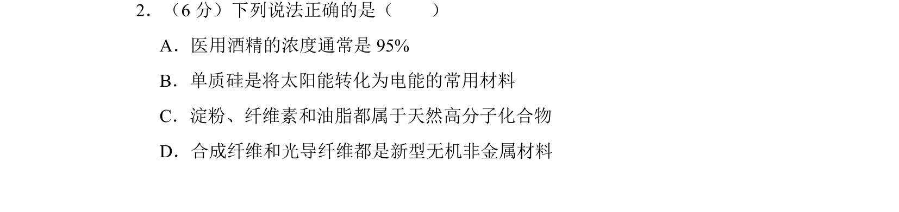
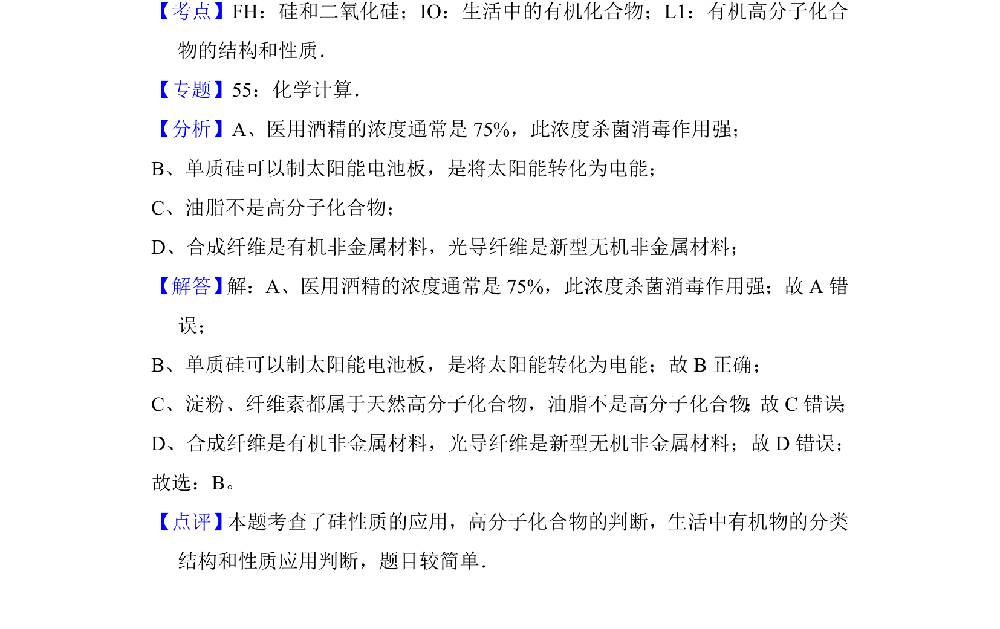

考点：硅和二氧化硅 有机高分子化合物 生活中的有机物

本题考查硅的性质、高分子化合物判断及常见有机物分类与应用。

📄 原 PDF 第 2 页：
素材/真题/吉林/2008-2024·（吉林）化学高考真题/2012年高考化学试卷（新课标）（解析卷）.pdf
2．（6分）下列说法正确的是（ ） A．医用酒精的浓度通常是95% B．单质硅是将太阳能转化为电能的常用材料 C．淀粉、纤维素和油脂都属于天然高分子化合物 D．合成纤维和光导纤维都是新型无机非金属材料
【考点】FH：硅和二氧化硅；IO：生活中的有机化合物；L1：有机高分子化合 物的结构和性质．菁优网版权所有 【专题】55：化学计算． 【分析】A、医用酒精的浓度通常是75%，此浓度杀菌消毒作用强； B、单质硅可以制太阳能电池板，是将太阳能转化为电能； C、油脂不是高分子化合物； D、合成纤维是有机非金属材料，光导纤维是新型无机非金属材料； 【解答】 解：A、医用酒精的浓度通常是75%，此浓度杀菌消毒作用强；故A错 误； B、单质硅可以制太阳能电池板，是将太阳能转化为电能；故B正确； C、淀粉、纤维素都属于天然高分子化合物，油脂不是高分子化合物 ； 故C错误 ； D、合成纤维是有机非金属材料，光导纤维是新型无机非金属材料；故D错误； 故选：B。 【点评】 本题考查了硅性质的应用，高分子化合物的判断，生活中有机物的分类 结构和性质应用判断，题目较简单．